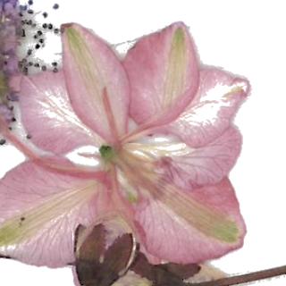

Share the Page is the nonprofit behind On the Same Page, our network of reading circles built around literacy, not literary credentials. No pressure to have finished the book, no judgment on how fast you read, and no such thing as a wrong question.
College trades the books that used to fuel our imaginations for dense academic texts — and that shift quietly pushes a lot of people away from reading for pleasure. On the Same Page exists to reverse that, one chapter, one book, one conversation at a time.
Share the Page is the nonprofit, and On the Same Page represents its branches — the reading circles bringing back the joy of reading. Share the Page carries that mission into the wider community, through events like our book fair and the push to build libraries in literary deserts.
Books that reflect a reader's own life back at them.
Books that offer a clear view into a life unlike their own.
Books immersive enough to step through and come out changed.
Join us on the City College campus for a community book fair — open to all community members and their kids. Come browse, bring the family, and help us get more books into more hands.
An essay by Frantz Fanon on how medicine and the figure of the doctor operated under colonial rule in Algeria — a short, challenging read that gives everyone plenty to talk about together.
Meetings are free and open — drop in once, or become a regular. Reach out and we'll send the next date, location, and a spare copy of the book if you need one.
